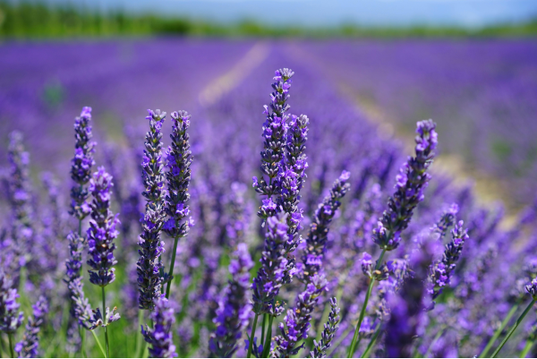
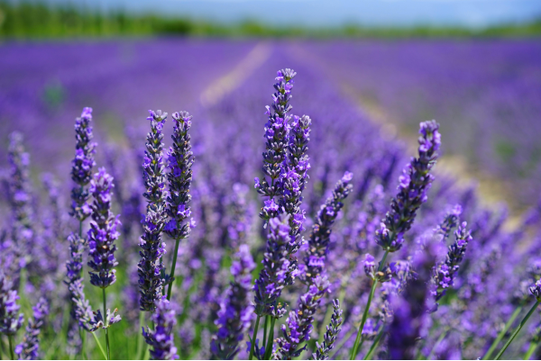

Go to Sephora or Ulta to smell and try on perfumes.
Put them on your skin so you can smell how it melts into your skin.
Keep in mind that the bottom notes are going to stick around the longest on your skin, while the top notes often are the quickest to fade
I organised the scents into different categories
Woody - recommended for people who enjoy hiking, camping, and various other outdoor activities—or those who simply want to give off the illusion that they enjoy those things.
Citrus- Citrus scents are crisp, clean, and refreshing, usually characterized by notes like lemon, grapefruit, orange, and bergamot.
Gourmand- Common notes include vanilla, chocolate, burnt sugar, and caramel. "A good gourmand fragrance evokes a sense of something yummy, sweet, and indulgent."
Floral- They're flirty and feminine and can range in intensity. some floral fragrances are full-on “walking in a garden” while others incorporate fruity elements for a sparkling, playful effect.
Fruity- Composed of notes like cherry, pear, and watermelon, fruity scents are evocative of hot summer days. They can be sweet, but the best ones never get cloying and can range from playful to sophisticated, depending on the other notes the fruit is paired with
 
